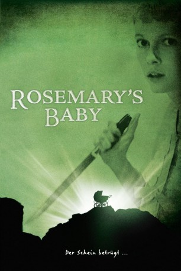
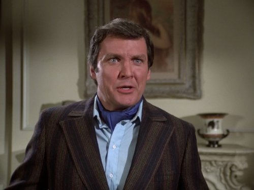

#10275 Rosemaries Baby
Alternativ: Rosemary's Baby (Englischer Titel)
Auszeichnungen: 1 Oscars gewonnen für 1 Oscars nominiert 1 GoldenGlobes gewonnen
 
 IMDB-Wertung: 8.0 / 10
IMDB-Wertung: 8.0 / 10  Metascore: 96
Metascore: 96 
Nach ihrer Hochzeit beziehen der erfolglose, aber ehrgeizige Schauspieler Guy Woodhouse und seine Frau Rosemarie ein altes Haus am New Yorker Central Park West. Nach kurzer Zeit besucht Guy immer häufiger die Nachbarn, das ältere Ehepaar Minnie und Roman Castevet. Rosemarie kommen die beiden eher etwas merkwürdig vor. Nachdem Guy durch die unerklärliche Erblindung eines Konkurrenten überraschend die Hauptrolle in einem Broadway-Stück erhält, schlägt er Rosemarie vor, ein Kind zu haben.In der geplanten Liebesnacht ist Rosemary benommen - vielleicht vom Alkohol, möglicherweise aber auch von der Mousse au chocolat, die Minnie zubereitet hat. In einem furchtbaren Alptraum sieht sie sich von Guy, den Castevets und deren Freunden umringt, während sie selbst vom Teufel vergewaltigt wird. Tatsächlich findet sie am nächsten Morgen zahlreiche Kratzspuren auf ihrem Körper ...
Jahr: 1968
Dauer: 136 Minuten
FSK: 16
Land: USA Studio: Paramount A Gulf+Western CompanyTonspuren: DD2.0 - ,
Untertitel: Deutsch,
Auflösung: 1080p (1920x1040) Größe: 8949 MB
Genre: Horror, Drama
Regisseur:  Roman Polanski
Roman Polanski
Drehbuch: Ira Levin, Roman Polanski
Soundtrack: Krzysztof Komeda
Darsteller:
 Mia Farrow als Rosemary Woodhouse
Mia Farrow als Rosemary Woodhouse John Cassavetes als Guy Woodhouse
John Cassavetes als Guy Woodhouse Ruth Gordon als Minnie Castevet
Ruth Gordon als Minnie Castevet- Sidney Blackmer als Roman Castevet
- Maurice Evans als Hutch
 Ralph Bellamy als Dr. Sapirstein
Ralph Bellamy als Dr. Sapirstein- Victoria Vetri als Terry
- Patsy Kelly als Laura-Louise
 Elisha Cook Jr. als Mr. Nicklas
Elisha Cook Jr. als Mr. Nicklas- Emmaline Henry als Elise Dunstan
 Charles Grodin als Dr. Hill
Charles Grodin als Dr. Hill- Phil Leeds als Dr. Shand
- D'Urville Martin als Diego
 Hope Summers als Mrs. Gilmore
Hope Summers als Mrs. Gilmore- Marianne Gordon als Rosemary's Girl Friend
- Wende Wagner als Rosemary's Girl Friend
 Rutanya Alda als Dr. Hill's Answering Service (uncredited)
Rutanya Alda als Dr. Hill's Answering Service (uncredited) Bill Baldwin als Salesman (uncredited)
Bill Baldwin als Salesman (uncredited)- Walter Baldwin als Mr. Wees (uncredited)
 Roy Barcroft als Sun-Browned Man (uncredited)
Roy Barcroft als Sun-Browned Man (uncredited) Gail Bonney als Babysitter (uncredited)
Gail Bonney als Babysitter (uncredited)- William Castle als Man by Pay Phone (uncredited)
 Tony Curtis als Donald Baumgart (uncredited)
Tony Curtis als Donald Baumgart (uncredited) Alphonso DuBois als Painter (uncredited)
Alphonso DuBois als Painter (uncredited) Duke Fishman als Man (uncredited)
Duke Fishman als Man (uncredited)-  Jack Knight als Investigating patrolman (uncredited)
- Mona Knox als Mrs. Byron (uncredited)
- Craig Littler als Jimmy (uncredited)
- Ken Luber als Man at Party (uncredited)
- Patricia O'Neal als Mrs. Wees (uncredited)
 Robert Osterloh als Mr. Fountain (uncredited)
Robert Osterloh als Mr. Fountain (uncredited) George R. Robertson als Lou Comfort (uncredited)
George R. Robertson als Lou Comfort (uncredited)- George Savalas als Workman (uncredited)
- Almira Sessions als Mrs. Sabatini (uncredited)
 Max Wagner als Man in Dream Sequence (uncredited)
Max Wagner als Man in Dream Sequence (uncredited)- Hanna Hertelendy als Grace Cardiff
- Toby Adler als Lady on Yacht (uncredited)
- Charlotte Boerner als Mrs. Fountain (uncredited)
- Yvonne Bouvier als Woman in Dream Sequence (uncredited)
- Carol Brewster als Claudia Comfort (uncredited)
- Lynn Brinker als Sister Veronica (uncredited)
- Sebastian Brook als Argyron Stavropoulos (uncredited)
- Florence Clayton als Woman in Dream Sequence (uncredited)
- Gordon Connell als Allen Stone - Guy's Agent (uncredited)
- Patricia Ann Conway als Mrs. John F. Kennedy (uncredited)
- Pearl S. Cooper als Woman in Dream Sequence (uncredited)
- Fritzi Jane Courtney als Woman at Party (uncredited)
- Roger Creed als Mason (uncredited)
- Jane Crowley als Woman in Dream Sequence (uncredited)
- Joyce Davis als Dee Bertillon (uncredited)
Datei: X:\1968\Rosemaries Baby (1968, FSK16, 1920x1040).mkv seit 27.12.2018
Festplatte: HD 1900-1970
 Es gibt insgesamt 25 Filme in der Gruppe '1968'
Es gibt insgesamt 25 Filme in der Gruppe '1968'